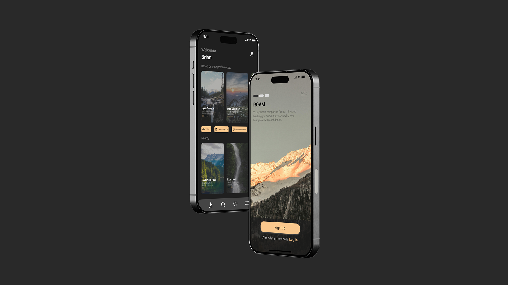
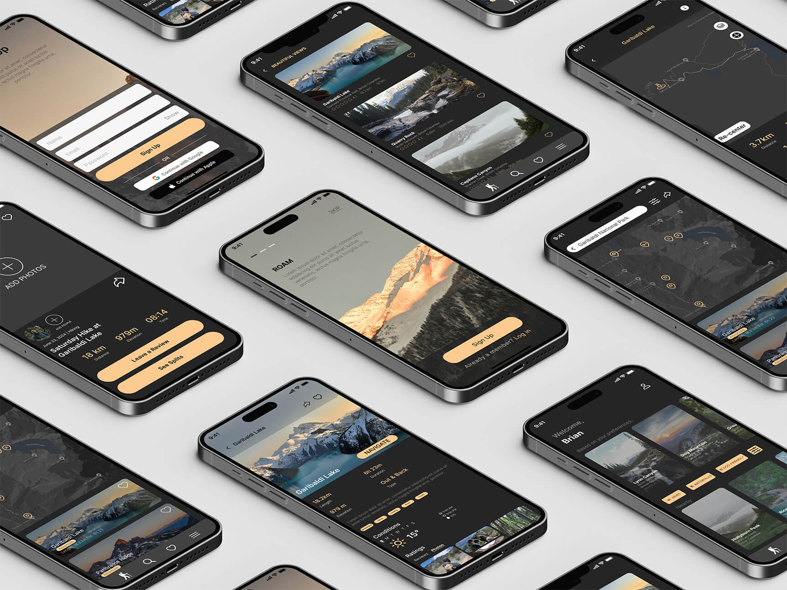
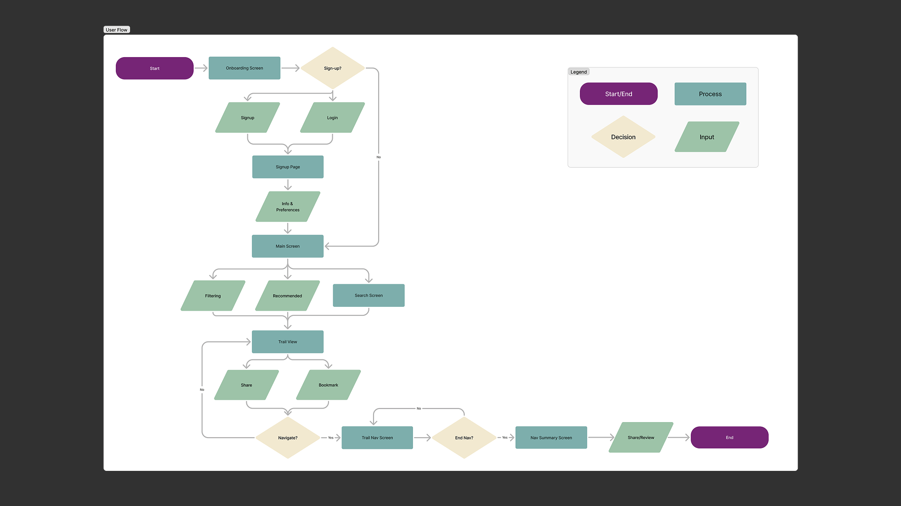
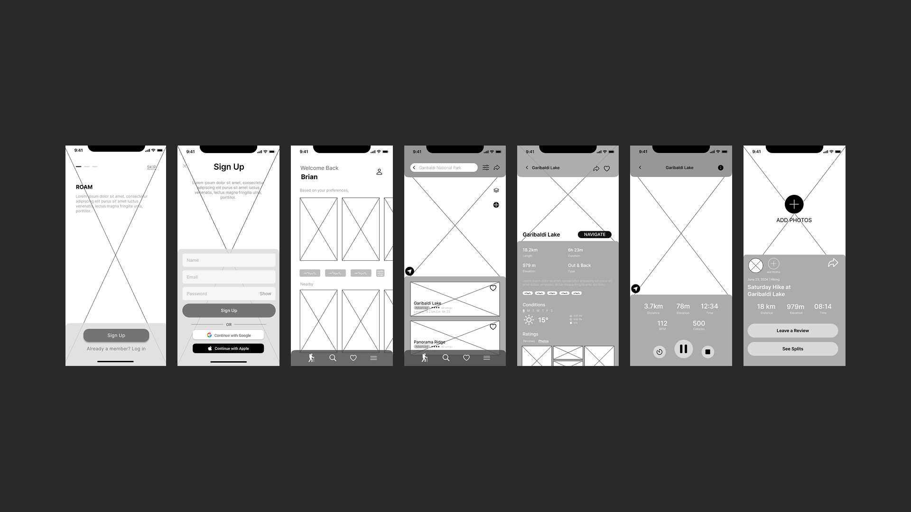

ROAM
02
04
Type
UX Strategy
UI Design
Software
Figma
Adobe CC
Timeframe
22 Hours

Reliable trail information, connectivity issues, difficulty seeking trails, proper equipment, and accurate conditions - common hiking dilemmas that needed solutions.
OVERVIEW
CHALLENGE
Many hikers struggle with inconsistent trail information, connectivity issues, and difficulty in selecting suitable trails. While existing hiking apps provide extensive trail data, users were often faced with conflicting information for trail details, outdated conditions, and an overwhelmbing amount of information that isn’t easily digestible. The challenge was to create a visually clear experience that allows for users to confidently navigate through the pages and choose trails based on accurate information.
SOLUTION
To better understand the challenges faced by users on current hiking apps, I applied an empathetic approach to my design process. Through a short competitive analysis, user research methods/exercises and usability testing, I was able to identify key friction points and designed a solution that focuses on creating a seamless trail search experience, simplified card system for quick access to key trail details, and an offline friendly experience to address the access of information in remote areas.

RESEARCH
Competitive Analysis
While analyzing a few of the leading competitors to ROAM, I was able to keep an eye out for pain points, and user frustrations. An important insight from a Reddit community discussion highlighted the discrepancy of data between apps, which brings out a major trust issue that needed to be addressed.


PERSONA & EMPATHY MAPPING
To gain a better understanding of users, I created a persona and empathy map that captures their main goals, pain points, and behaviours. This helped me to identify some key emotional triggers and challenges, allowing me to design a solution that resonates with their needs.


Ideation
User Flow
A primary user flow was created that maps out the main route of the typical user - from sign-up to discovery, navigation and tracking progress. This exercise ensured that the main interaction points for the app were covered and taken into account to remove any obstacles that the users may face. It also creates clear routes and decision points to help me create a more user-friendly app.
Low-Fidelity Wireframing
Beginning with low-fidelity wireframes, I was able to map out the overall layout and structure for ROAM. The initial screens developed had a strong emphasis towards key interactions within the app, follows the user flowchart, and ensures that the primary functions for trail searching, navigation, and filtering were displayed. This stage allowed for a quick usability test to uncover issues early in the process before moving into hi-fidelity designs.

DESIGN
Inspiration & Iteration
Before creating high fidelity designs, I explored various mobile apps and designs that showcased clear and meaningful data, intuitive icons, and thoughtful usages of colour. Feedback from the low-fidelity stages revealed that there was a clear need for a more robust filtering system, leading to the production of a pop-up menu with detailed options and selections such as difficulty, length, elevation gain, and duration in the hi-fi stages.

Hi-Fidelity Wireframing
Transitioning into the hi-fidelity stages, I realized that visual appeal plays a large role when hikers make decisions which leads to a potentially cluttered visual design and an overload of images. Therefore, I opted for a dark theme with several background overlays underneath crucial interactive elements to avoid confusions, reducing the cognitive load and assure that users navigate throughout the app seamlessly.


Reflection
Throughout the development of the ROAM app, I gained valuable insight into the design process and the importance of research and feedback. Using various UX research methodologies allowed me to adopt a user-centric approach and make informed decisions that guided the design process.
Looking forward, there’s tons of room for improvement that I would’ve liked to incorporate into the project. By setting a proper branding/design system for colors and typography in Figma early in the process would’ve allowed me to work more efficient and create better consistency all around the pages.
As this project was done under a short timeframe, all the components were custom made, which is quite unrealistic. For my future projects, I would hope to create a more consistent digital experience that uses an existing UI kit like Google’s Material Design or Carbon IBM’s design system to get a better feel for working with existing components. This would allow me to learn how to use an organized set of components and existing principles that I could apply to my projects, instead of having to create from scratch.
Overall, ROAM has been a rewarding learning experience that not only enhances the trail discovery for outdoor enthusiasts, but also helps to motivate individuals to get outdoors and enjoy the physical and mental health benefits that hiking has to offer.